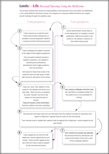

Resources
Here you will find resources to help you promote Leeds for Life in print and on the web.
The resources include:
- Student Guide: an overview of the Leeds for Life website
- Staff Guide: Online Personal Tutorial Booking System
- Integrating students into the academic community: Examples of Good Practice
- Communications guide (401kb .PDF)
- Opportunity template (21kb .DOC)
- UG slides for school welcome meetings (1.85mb .PPT)
- PGT slides for school welcome meetings (1.85mb .PPT)
- Suggested wording for school handbooks (27kb .DOC)
- Communications template for supporting a promotional campaign (27kb .DOC)
Leeds for Life opportunity buttons
You can download the buttons by clicking on the PNG (web) and TIFF (print) links below
{kind=link}
{kind=link}
{kind=link}
{kind=link}
If you have any questions about how to use these resources, please contact us at leedsforlife@leeds.ac.uk
Promoting Leeds for Life
Prospective students
If you are communicating with prospective students, make sure you incorporate a message about Leeds for Life - this includes open day briefings and marketing materials such as faculty brochures and school talks.
To find out more about marketing Leeds for Life, please email leedsforlife@leeds.ac.uk and a member of the team will get back to you.
Current students
School welcome meetings
Leeds for Life is a really distinctive development for Leeds, and we strongly encourage staff to promote it as part of their welcome briefings at the start of the academic year. We have included some suggested material in a PowerPoint slide in the 'Resources' tab of your dashboard.
School handbooks
School handbooks should incorporate information on Leeds for Life. We have included some suggested wording in the 'Resources' tab of your dashboard.
Portal
Schools and services can promote their Leeds for Life opportunities through the Portal. Just send any forthcoming events to leedsforlife@leeds.ac.uk and a member of the team will get back to you.
Other promotional material
If your school or service has an opportunity registered on the Leeds for Life website, please ensure any associated promotional material carries the logo 'A Leeds for Life Opportunity', both on the web and in print. You can get this logo in different sizes on the 'Resources' tab of your dashboard, but please send a proof of the material to leedsforlife@leeds.ac.uk so we have a chance to review the final version.
Guidance
Leeds Model for Personal Tutoring
The process outlined below shows the responsibilities of both personal tutors and tutees, as established in the Leeds Model for Personal Tutoring.
The sequence of using the webforms follows your regular tutorial meetings through the academic year.
Further guidance and resources for personal tutors can be found on the Learning and Teaching Support website.

New Opportunities
Funding New Opportunities
At Leeds for Life we encourage students to take opportunities and develop new skills as part of their overall experience of the University.
These opportunities are provided both by academic departments and by a wide range of co-curricular groups, based in staff and student-run organisations and services on campus.
In order to broaden the range of opportunities we can offer students, a small amount of pump-priming funding is now available. Project proposals are welcome from all categories of staff, staff/student groups and student-led organisations.
Download the guidelines and application form (.doc) for more information.